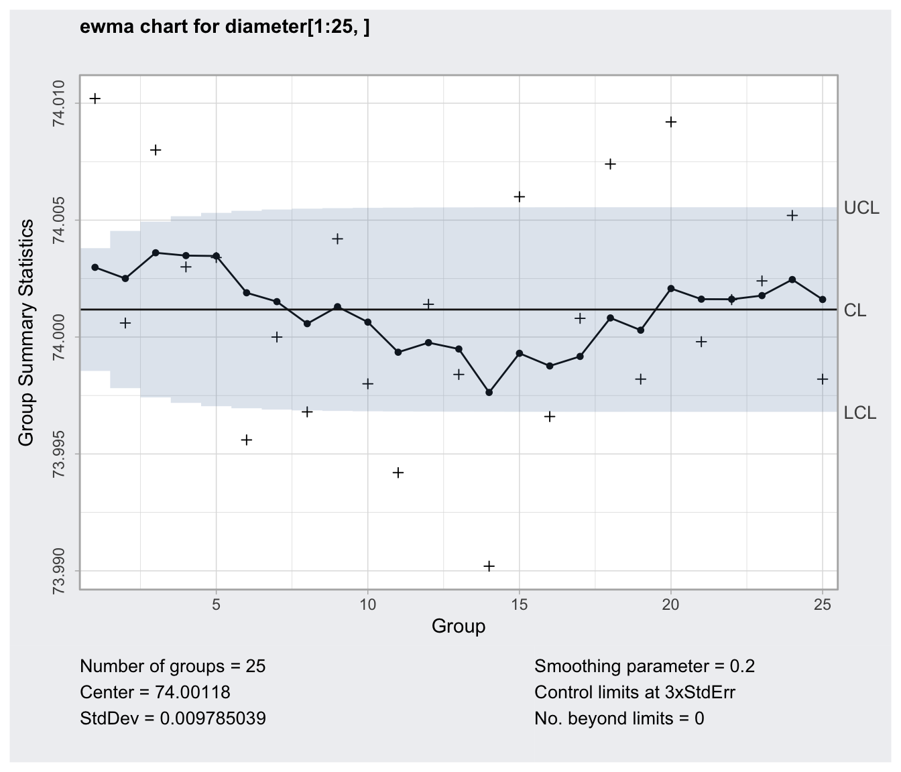
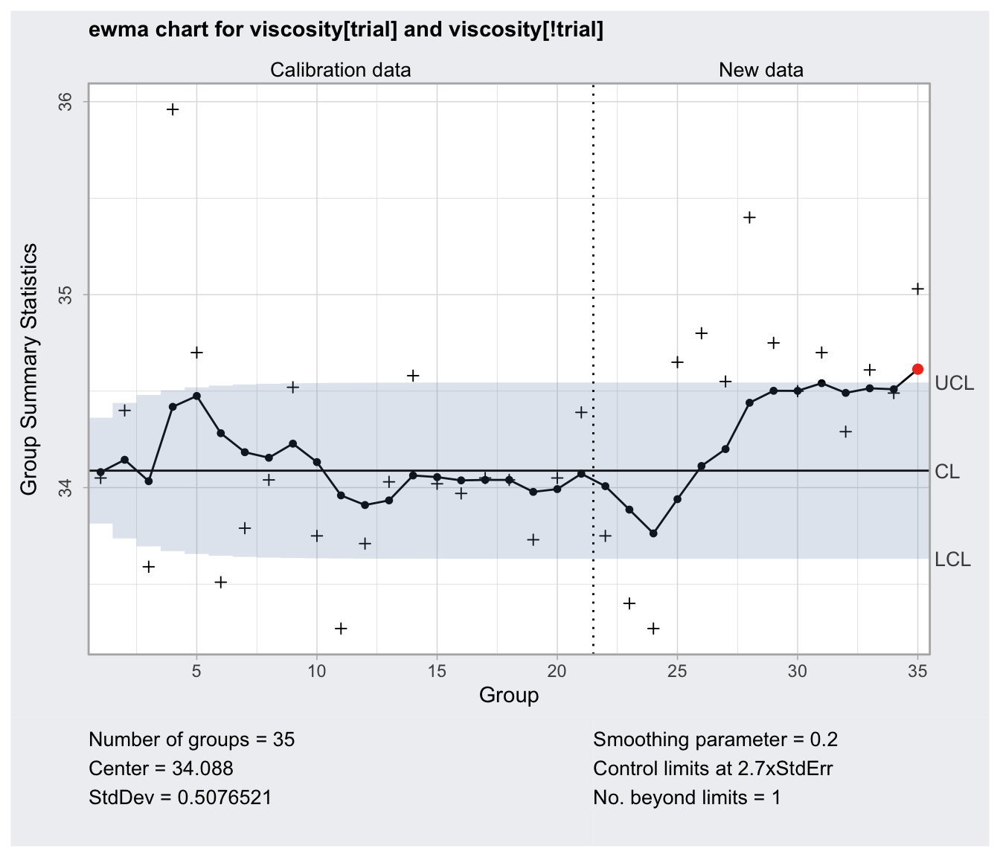

ewma.RdCreate an object of class 'ewma.qcc' to compute and draw an Exponential Weighted Moving Average (EWMA) chart for statistical quality control.
ewma(data, sizes, center, std.dev,
lambda = 0.2, nsigmas = 3,
newdata, newsizes, ...)
# S3 method for class 'ewma.qcc'
print(x, digits = getOption("digits"), ...)
# S3 method for class 'ewma.qcc'
plot(x,
xtime,
add.stats = qcc.options("add.stats"),
chart.all = qcc.options("chart.all"),
fill = qcc.options("fill"),
label.center = "CL",
label.limits = c("LCL", "UCL"),
title, xlab, ylab, xlim, ylim,
digits = getOption("digits"), ...)a data frame, a matrix or a vector containing observed data for the variable to chart. Each row of a data frame or a matrix, and each value of a vector, refers to a sample or ”rationale group”.
a value or a vector of values specifying the sample sizes associated with each group. If not provided the sample sizes are obtained counting the non-NA elements of each row of a data frame or a matrix; sample sizes are set all equal to one if data is a vector.
a value specifying the center of group statistics or target.
a value or an available method specifying the within-group standard deviation(s) of the process.
Several methods are available for estimating the standard deviation. See sd.xbar and sd.xbar.one for, respectively, the grouped data case and the individual observations case.
the smoothing parameter \(0 \le \lambda \le 1\)
a numeric value specifying the number of sigmas to use for computing control limits.
a data frame, matrix or vector, as for the data argument, providing further data to plot but not included in the computations.
a vector as for the sizes argument providing further data sizes to plot but not included in the computations.
a vector of date-time values as returned by Sys.time and Sys.Date. If provided it is used for x-axis so it must be of the same length as the statistic charted.
a logical value indicating whether statistics and other information should be printed at the bottom of the chart.
a logical value indicating whether both statistics for data and for newdata (if given) should be plotted.
a logical value specifying if the in-control area should be filled with the color specified in
qcc.options("zones")$fill.
a character specifying the label for center line.
a character vector specifying the labels for control limits.
a character string specifying the main title. Set title = NULL to remove the title.
a string giving the label for the x-axis and the y-axis.
a numeric vector specifying the limits for the x-axis and the y-axis.
the number of significant digits to use.
an object of class 'ewma.qcc'.
additional arguments to be passed to the generic function.
EWMA chart smooths a series of data based on a moving average with weights which decay exponentially. Useful to detect small and permanent variation on the mean of the process.
Returns an object of class 'ewma.qcc'.
Mason, R.L. and Young, J.C. (2002) Multivariate Statistical Process Control with Industrial Applications, SIAM.
Montgomery, D.C. (2013) Introduction to Statistical Quality Control, 7th ed. New York: John Wiley & Sons.
Ryan, T. P. (2011), Statistical Methods for Quality Improvement, 3rd ed. New York: John Wiley & Sons, Inc.
Scrucca, L. (2004). qcc: an R package for quality control charting and statistical process control. R News 4/1, 11-17.
Wetherill, G.B. and Brown, D.W. (1991) Statistical Process Control. New York: Chapman & Hall.
##
## Grouped-data
##
data(pistonrings)
diameter = qccGroups(data = pistonrings, diameter, sample)
q = ewma(diameter[1:25,], lambda=0.2, nsigmas=3)
summary(q)
#> ── EWMA Chart ────────────────────────────────────
#>
#> Data (phase I) = diameter[1:25, ]
#> Number of groups = 25
#> Group sample size = 5
#> Center of group statistics = 74.00118
#> Standard deviation = 0.009785039
#>
#> Smoothing parameter = 0.2
#> Control limits at nsigmas = 3
#> LCL UCL
#> 1 73.99855 74.00380
#> 2 73.99781 74.00454
#> :
#> 25 73.99680 74.00555
plot(q)

ewma(diameter[1:25,], lambda=0.2, nsigmas=2.7, newdata=diameter[26:40,])
#> ── EWMA Chart ────────────────────────────────────
#>
#> Data (phase I) = diameter[1:25, ]
#> Number of groups = 25
#> Group sample size = 5
#> Center of group statistics = 74.00118
#> Standard deviation = 0.009785039
#>
#> New data (phase II) = diameter[26:40, ]
#> Number of groups = 15
#> Group sample size = 5
#>
#> Smoothing parameter = 0.2
#> Control limits at nsigmas = 2.7
#> LCL UCL
#> 1 73.99881 74.00354
#> 2 73.99815 74.00420
#> :
#> 40 73.99724 74.00511
##
## Individual observations
##
data(viscosity)
q = with(viscosity, ewma(viscosity[trial], lambda = 0.2, nsigmas = 2.7,
newdata = viscosity[!trial]))
summary(q)
#> ── EWMA Chart ────────────────────────────────────
#>
#> Data (phase I) = viscosity[trial]
#> Number of groups = 20
#> Group sample size = 1
#> Center of group statistics = 34.088
#> Standard deviation = 0.5076521
#>
#> New data (phase II) = viscosity[!trial]
#> Number of groups = 15
#> Group sample size = 1
#>
#> Smoothing parameter = 0.2
#> Control limits at nsigmas = 2.7
#> LCL UCL
#> [1,] 33.81387 34.36213
#> [2,] 33.73694 34.43906
#> :
#> [35,] 33.63111 34.54489
plot(q)
